Research topics and projects
Tangible Landscape
- 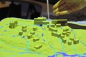 Tangible Landscape is a collaborative modeling environment for analysis of terrain changes. We couple a scanner, projector and a physical 3D model with GRASS GIS. We can analyze the impact of terrain changes by capturing the changes on the model, bringing them into the GIS, performing desired analysis or simulation and projecting the results back on the model.
Published in book Tangible Modeling with Open Source GIS. Published in iEMSs proceedings 2014, see abstract.
-
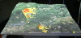
Tangible modeling of Sudden Oak Disease spread
With Tangible Landscape we are exploring the spread of Sudden Oak Disease in California and the ways to prevent the spread by applying treatments at different loations. We coupled Tangible Landscape with R for the spread modeling. I am exploring different modes of interaction representing different treatments.
-
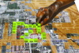
Tangible modeling of termites spread
With Tangible Landscape we are simulating the spread of termites in Florida as a serious game where players try to prevent the spread by applying treatments at different loations. We coupled Tangible Landscape with R for the spread modeling.
-
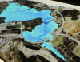
Dam break simulation with Tangible Landscape
Using GRASS GIS module r.damflood I am simulating dam break flooding on Lake Raleigh area. In 1996 the dam broke after a hurricane, with Tangible Landscape we can model the same situation under the current conditions and explore what-if scenarios. Pictures on Google+ and MEA 801 presentation.
-
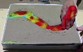
Tangible exploration of subsurface properties
With Tangible Landscape, we can interactively visualize subsurface data in the form of a 3D raster. By creating a physical sand model of a study area, removing the sand from different parts of the model and projecting the computed cross-sections, we can look under the ground as if we were at an excavation site, and see the actual data represented as a 3D raster in that particular part of the model. For more information, here is a Youtube link. This project was done as part of MEA 582 course, see related google site with animations.
FUTURES integration into GRASS GIS
-
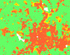
FUTure Urban-Regional Environment Simulation (FUTURES) is
a patch-based land change model for generating scenario-based
regional forecasts of urban growth pattern. Currently we
are working on integrating FUTURES into GRASS GIS and automate
data preprocessing. New modules include modules
for calibrating patch size and shape, computing development pressure,
helping with choosing the statistical model and computing population demand.
The development happens in private repository, tested modules will be moved
to GRASS GIS addons.
Submitted and accepted
work-in-progress paper for FOSS4G-Europe here. See presentation slides here.
Abstract: Many valuable models and tools developed by scientists are often inaccessible to their potential users because of non-existent sharing infrastructure or lack of documentation. Case in point is the FUTure Urban-Regional Environment Simulation (FUTURES), a patch-based land change model for generating scenario-based regional forecasts of urban growth pattern. Despite a high-impact publication, few scientists, planners, or policy makers have adopted FUTURES due to complexity in use and lack of direct access. We seek to address these issues by integrating FUTURES into GRASS GIS, a free and open source GIS and research platform for geospatial domain. This integration will enable us to take advantage of GRASS GIS tools for landscape structure analysis, and thus eliminate the need to use proprietary software for data preprocessing. Moreover, integration into GRASS GIS simplifies the distribution of FUTURES across all main operating systems and ensures maintainability of our project in the future. We will present our use case of integrating this advanced land change model into GRASS GIS platform and discuss the current state of the integration as well as the planned steps to achieve our vision of simple-to-use and fully free and open source FUTURES.
UAV/lidar/Kinect data processing and fusion
- I derive and process dense point clouds coming from various sources including lidar, UAV and Kinect scanner. I explore open source Structure from Motion software and implement different lidar/UAV/Kinect fusion methods, see MEA792 project paper.
Multidimensional geovisualization in GRASS GIS
-
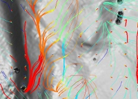
3D flow lines and flow accumulation analysis in elevation STC
In this project I extended the 3D raster handling capabilities of GRASS GIS by developing a module for computing 3D vector flow lines of a voxel representing trivariate continuous field. Three-dimensional flow lines can help us study the dynamics of elevation time-series in a form of space-time cube voxel representation.
-
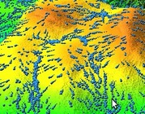
Visualization of vector fields using particles in GRASS GIS
In GRASS GIS I developed visualization of processes based on vector fields using the movement of vector particles. As an example I applied such comet-like visualization to water flow and cumulative cost surface. The main code is on GitHub and the scripts for making animations are on my course google site. Results are presented in a poster.
-
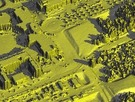
Module r.sun.hourly/r.sun.daily for dynamic solar radiation
GRASS GIS modules r.sun.hourly/r.sun.daily simplify solar radiation computation and generate series of solar radiation maps registered in GRASS GIS Temporal Framework.
-
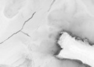
Module r.skyview for Skyview Factor visualization
GRASS GIS module r.skyview computes Skyview Factor, a visualization used for example by archaeologist.
-
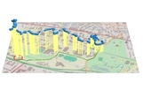
Space-time cube visualization of eye tracking data
More visualizations and scripts available on google website and NCSU GitHub.
{kind=link}
GRASS GIS wxGUI development
-
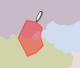
GRASS GIS Raster Digitizer
GRASS GIS Raster Digitizer enables to create and edit raster maps by drawing areas, lines or points with given category.
-
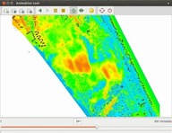
GRASS GIS Animation Tool
Animation Tool enables fast and simple way to animate spatio-temporal data in GRASS. It supports multiple time-series as well as static maps of any data type (raster, vector, 3D raster).
-
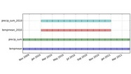
GRASS GIS Timeline Tool
The Timeline Tool is a GRASS GIS GUI component which allows the user to compare the extents of temporal datasets in a plot.
Google Summer of Code
-
Implementation of GRASS GIS module for 3D raster flow line computation
In this project I extended the 3D raster handling capabilities of GRASS GIS by developing a module for computing 3D vector flow lines of a voxel representing trivariate continuous field. Three-dimensional flow lines can help us study the dynamics of elevation time-series in a form of space-time cube voxel representation. The visualization of such flow lines together with isosurfaces and other geographic data can be done directly in GRASS GIS.
The r3.flow code is available in the latest version of GRASS GIS 7. Have a look at the r3.flow manual page.
-
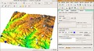
Completion of wxGUI Nviz extension for 3D data visualization in GRASS GIS
This project continued in the development of wxNviz as 3D visualization tool for native GRASS GUI (wxGUI). Nviz graphical user interface was originally written in Tcl/Tk. wxNviz lacked many features of original Nviz application. Thus, the goal of this project was to add the missing functionality and replace Tcl/Tk-based nviz in GRASS 7 by modern 3D visualization tool integrated in wxGUI.